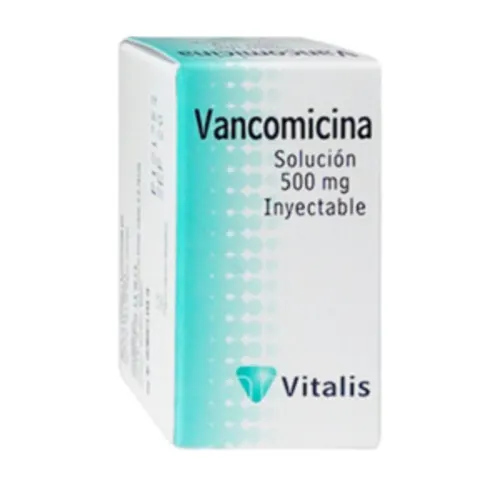
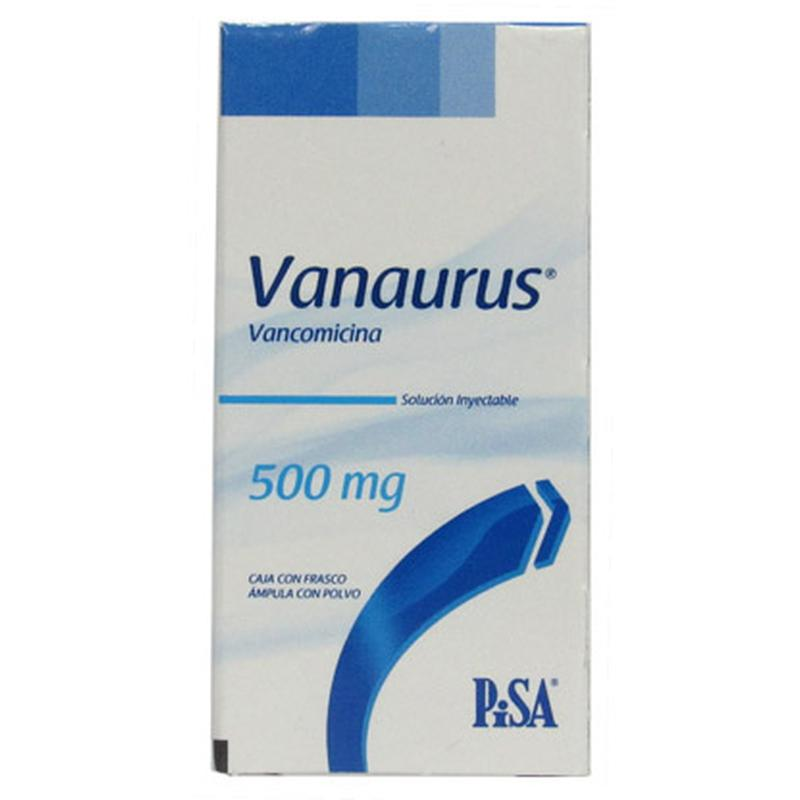

←
Glucopéptidos y Lipoglucopéptidos


Mecanismo de Acción
- GLUCOPÉPTIDOS (Vancomicina)
Inhibe la síntesis de la pared celular bacteriana al unirse firmemente a la d-alanina-d-alanina de los precursores del peptidoglicano, impidiendo su polimerización y entrecruzamiento.
Bactericida contra grampositivos, incluyendo cepas resistentes a betalactámicos (como MRSA).
No actúa sobre gramnegativos.
- LIPOGLUCOPÉPTIDO (Dalbavancina)
Similar a vancomicina, se une a la d-alanina-d-alanina del precursor del peptidoglicano, inhibiendo la síntesis de la pared bacteriana.
Además, su cadena lipídica permite una mejor unión a la membrana y prolonga su acción.
Es bactericida de espectro grampositivo, incluyendo MRSA.
Indicaciones Terapéuticas
- GLUCOPÉPTIDOS (Vancomicina)
- Infecciones graves por Staphylococcus aureus resistente a meticilina (MRSA)
- Endocarditis bacteriana
- Neumonía nosocomial
- Infecciones de piel y tejidos blandos complicadas
- Meningitis bacteriana (si hay alergia a betalactámicos)
- Colitis pseudomembranosa (por Clostridioides difficile, en formulación oral)
- LIPOGLUCOPÉPTIDO (Dalbavancina)
- Infecciones agudas de piel y tejidos blandos causadas por bacterias grampositivas, incluyendo:
- Staphylococcus aureus (incluyendo MRSA)
- Streptococcus pyogenes, agalactiae, anginosus
- Enterococcus faecalis (sensible)
Contraindicaciones
- GLUCOPÉPTIDOS (Vancomicina)
- Hipersensibilidad a vancomicina
- Precaución en pacientes con insuficiencia renal (riesgo de nefrotoxicidad
- No usar IV para colitis pseudomembranosa (ineficaz por esa vía para ese uso)
- LIPOGLUCOPÉPTIDO (Dalbavancina)
- Hipersensibilidad a dalbavancina u otros glucopéptidos
- Precaución en insuficiencia hepática o renal grave
- No se recomienda en infecciones osteoarticulares o bacteriemia (datos limitados)
Posología
- GLUCOPÉPTIDOS (Vancomicina)IV (infecciones sistémicas):
- 15-20 mg/kg cada 8-12 h, ajustado según peso y función renal.
- Niveles plasmáticos deben monitorearse (trough entre 15-20 µg/mL en infecciones graves)
- LIPOGLUCOPÉPTIDO (Dalbavancina)Oral (colitis por C. difficile):
- 125 mg cada 6 h durante 10 días
- Casos graves: hasta 500 mg cada 6 h
- LIPOGLUCOPÉPTIDO (Dalbavancina)
Reacciones adversas
- GLUCOPÉPTIDOS (Vancomicina)IV (infecciones sistémicas):
- "Síndrome del hombre rojo": rubor, prurito, hipotensión (por infusión rápida)
- Nefrotoxicidad (aumenta con aminoglucósidos)
- Ototoxicidad (en dosis altas o uso prolongado)
- Fiebre, escalofríos
- Neutropenia, trombocitopenia
- LIPOGLUCOPÉPTIDO (Dalbavancina)Oral (colitis por C. difficile):
- Náusea, diarrea, cefalea
- Elevación de enzimas hepáticas
- Rash
- Prurito
- Fiebre
- Reacciones en sitio de infusión
Interacciones medicamentosas
- GLUCOPÉPTIDOS (Vancomicina)IV (infecciones sistémicas):
- Aminoglucósidos, furosemida: ↑ riesgo de nefro/ototoxicidad
- Anestésicos: ↑ riesgo de eritema y urticaria si se administran juntos rápidamente
- Agentes nefrotóxicos o diuréticos: potencial sinérgico tóxico renal
- LIPOGLUCOPÉPTIDO (Dalbavancina)Oral (colitis por C. difficile):
- No tiene interacciones clínicas relevantes conocidas hasta el momento
- No se metaboliza por CYP450, por lo que tiene bajo potencial de interacción
Presentacións
- GLUCOPÉPTIDOS (Vancomicina)IV (infecciones sistémicas):
- Viales con polvo para reconstituir IV: 500 mg, 1 g
- Cápsulas orales: 125 mg (para colitis por C. difficile)
- LIPOGLUCOPÉPTIDO (Dalbavancina)Oral (colitis por C. difficile):
- Polvo liofilizado para reconstituir: viales de 500 mg y 1000 mg
- Administración: IV lenta en solución (diluida en 100 mL de solución salina)